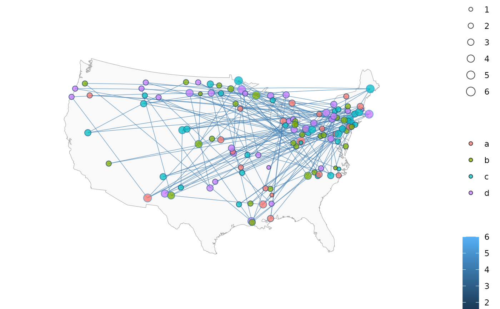

Plots a network with ggplot2 suitable for overlay on a ggmap plot or ggplot2
Usage
ggnetworkmap(
gg,
net,
size = 3,
alpha = 0.75,
weight,
node.group,
node.color = NULL,
node.alpha = NULL,
ring.group,
segment.alpha = NULL,
segment.color = "grey",
great.circles = FALSE,
segment.size = 0.25,
arrow.size = 0,
label.nodes = FALSE,
label.size = size/2,
...
)Arguments
- gg
an object of class
ggplot.- net
an object of class
network, or any object that can be coerced to this class, such as an adjacency or incidence matrix, or an edge list: see edgeset.constructors and network for details. If the object is of class igraph and the intergraph package is installed, it will be used to convert the object: seeasNetworkfor details.- size
size of the network nodes. Defaults to 3. If the nodes are weighted, their area is proportionally scaled up to the size set by
size.- alpha
a level of transparency for nodes, vertices and arrows. Defaults to 0.75.
- weight
if present, the unquoted name of a vertex attribute in
data. Otherwise nodes are unweighted.- node.group
NULL, the default, or the unquoted name of a vertex attribute that will be used to determine the color of each node.- node.color
If
node.groupis null, a character string specifying a color.- node.alpha
transparency of the nodes. Inherits from
alpha.- ring.group
if not
NULL, the default, the unquoted name of a vertex attribute that will be used to determine the color of each node border.- segment.alpha
transparency of the vertex links. Inherits from
alpha- segment.color
color of the vertex links. Defaults to
"grey".- great.circles
whether to draw edges as great circles using the
geospherepackage. Defaults toFALSE- segment.size
size of the vertex links, as a vector of values or as a single value. Defaults to 0.25.
- arrow.size
size of the vertex arrows for directed network plotting, in centimeters. Defaults to 0.
- label.nodes
label nodes with their vertex names attribute. If set to
TRUE, all nodes are labelled. Also accepts a vector of character strings to match with vertex names.- label.size
size of the labels. Defaults to
size / 2.- ...
other arguments supplied to geom_text for the node labels. Arguments pertaining to the title or other items can be achieved through ggplot2 methods.
Details
This is a descendant of the original ggnet function. ggnet added the innovation of plotting the network geographically.
However, ggnet needed to be the first object in the ggplot chain. ggnetworkmap does not. If passed a ggplot object as its first argument,
such as output from ggmap, ggnetworkmap will plot on top of that chart, looking for vertex attributes lon and lat as coordinates.
Otherwise, ggnetworkmap will generate coordinates using the Fruchterman-Reingold algorithm.
This is a function for plotting graphs generated by network or igraph in a more flexible and elegant manner than permitted by ggnet. The function does not need to be the first plot in the ggplot chain, so the graph can be plotted on top of a map or other chart. Segments can be straight lines, or plotted as great circles. Note that the great circles feature can produce odd results with arrows and with vertices beyond the plot edges; this is a ggplot2 limitation and cannot yet be fixed. Nodes can have two color schemes, which are then plotted as the center and ring around the node. The color schemes are selected by adding scale_fill_ or scale_color_ just like any other ggplot2 plot. If there are no rings, scale_color sets the color of the nodes. If there are rings, scale_color sets the color of the rings, and scale_fill sets the color of the centers. Note that additional arguments in the ... are passed to geom_text for plotting labels.
Examples
# small function to display plots only if it's interactive
p_ <- GGally::print_if_interactive
invisible(lapply(c("ggplot2", "maps", "network", "sna"), base::library, character.only = TRUE))
#> Loading required package: statnet.common
#>
#> Attaching package: ‘statnet.common’
#> The following objects are masked from ‘package:base’:
#>
#> attr, order, replace
#> sna: Tools for Social Network Analysis
#> Version 2.8 created on 2024-09-07.
#> copyright (c) 2005, Carter T. Butts, University of California-Irvine
#> For citation information, type citation("sna").
#> Type help(package="sna") to get started.
## Example showing great circles on a simple map of the USA
## http://flowingdata.com/2011/05/11/how-to-map-connections-with-great-circles/
# \donttest{
airports <- read.csv("http://datasets.flowingdata.com/tuts/maparcs/airports.csv", header = TRUE)
rownames(airports) <- airports$iata
# select some random flights
set.seed(123)
flights <- data.frame(
origin = sample(airports[200:400, ]$iata, 200, replace = TRUE),
destination = sample(airports[200:400, ]$iata, 200, replace = TRUE)
)
# convert to network
flights <- network(flights, directed = TRUE)
# add geographic coordinates
flights %v% "lat" <- airports[network.vertex.names(flights), "lat"]
flights %v% "lon" <- airports[network.vertex.names(flights), "long"]
# drop isolated airports
delete.vertices(flights, which(degree(flights) < 2))
# compute degree centrality
flights %v% "degree" <- degree(flights, gmode = "digraph")
# add random groups
flights %v% "mygroup" <- sample(letters[1:4], network.size(flights), replace = TRUE)
# create a map of the USA
usa <- ggplot(map_data("usa"), aes(x = long, y = lat)) +
geom_polygon(aes(group = group),
color = "grey65",
fill = "#f9f9f9", linewidth = 0.2
)
# overlay network data to map
p <- ggnetworkmap(
usa, flights,
size = 4, great.circles = TRUE,
node.group = mygroup, segment.color = "steelblue",
ring.group = degree, weight = degree
)
p_(p)

## Exploring a community of spambots found on Twitter
## Data by Amos Elberg: see ?twitter_spambots for details
data(twitter_spambots)
# create a world map
world <- fortify(map("world", plot = FALSE, fill = TRUE))
world <- ggplot(world, aes(x = long, y = lat)) +
geom_polygon(aes(group = group),
color = "grey65",
fill = "#f9f9f9", linewidth = 0.2
)
# view global structure
p <- ggnetworkmap(world, twitter_spambots)
p_(p)
 # domestic distribution
p <- ggnetworkmap(net = twitter_spambots)
p_(p)
# domestic distribution
p <- ggnetworkmap(net = twitter_spambots)
p_(p)
 # topology
p <- ggnetworkmap(net = twitter_spambots, arrow.size = 0.5)
p_(p)
# topology
p <- ggnetworkmap(net = twitter_spambots, arrow.size = 0.5)
p_(p)
 # compute indegree and outdegree centrality
twitter_spambots %v% "indegree" <- degree(twitter_spambots, cmode = "indegree")
twitter_spambots %v% "outdegree" <- degree(twitter_spambots, cmode = "outdegree")
p <- ggnetworkmap(
net = twitter_spambots,
arrow.size = 0.5,
node.group = indegree,
ring.group = outdegree, size = 4
) +
scale_fill_continuous("Indegree", high = "red", low = "yellow") +
labs(color = "Outdegree")
p_(p)
# compute indegree and outdegree centrality
twitter_spambots %v% "indegree" <- degree(twitter_spambots, cmode = "indegree")
twitter_spambots %v% "outdegree" <- degree(twitter_spambots, cmode = "outdegree")
p <- ggnetworkmap(
net = twitter_spambots,
arrow.size = 0.5,
node.group = indegree,
ring.group = outdegree, size = 4
) +
scale_fill_continuous("Indegree", high = "red", low = "yellow") +
labs(color = "Outdegree")
p_(p)
 # show some vertex attributes associated with each account
p <- ggnetworkmap(
net = twitter_spambots,
arrow.size = 0.5,
node.group = followers,
ring.group = friends,
size = 4,
weight = indegree,
label.nodes = TRUE, vjust = -1.5
) +
scale_fill_continuous("Followers", high = "red", low = "yellow") +
labs(color = "Friends") +
scale_color_continuous(low = "lightgreen", high = "darkgreen")
p_(p)
# show some vertex attributes associated with each account
p <- ggnetworkmap(
net = twitter_spambots,
arrow.size = 0.5,
node.group = followers,
ring.group = friends,
size = 4,
weight = indegree,
label.nodes = TRUE, vjust = -1.5
) +
scale_fill_continuous("Followers", high = "red", low = "yellow") +
labs(color = "Friends") +
scale_color_continuous(low = "lightgreen", high = "darkgreen")
p_(p)
 # }
# }